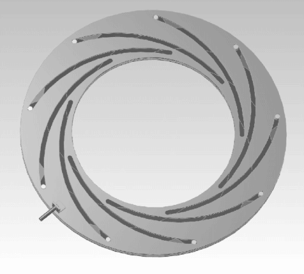
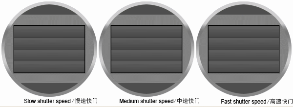
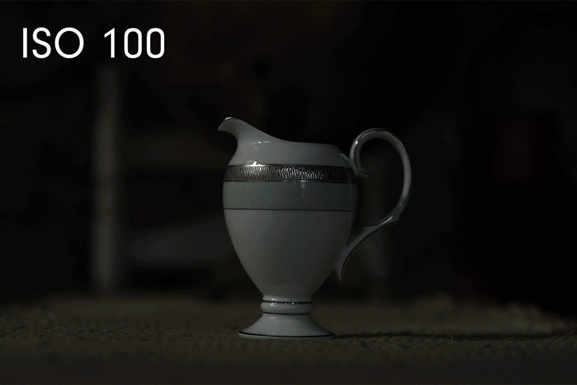
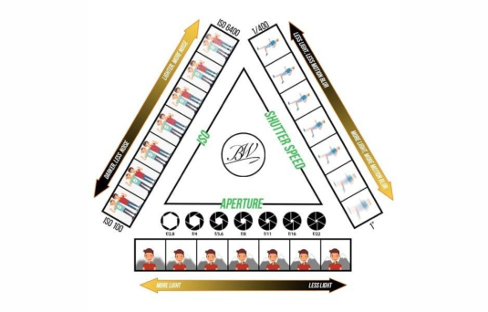
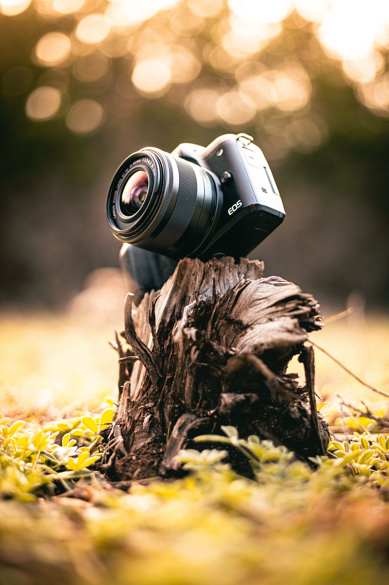

Експозицията определя колко светлина достига до сензора на фотоапарата. Тя се контролира от три основни настройки, известни като „Триъгълник на експозицията“.

Блендата е отворът вътре в обектива, през който преминава светлината. Измерва се в f-числа (напр. f/1.8, f/4, f/11).

Времето, за което затворът на апарата остава отворен, за да изложи сензора на светлина.

ISO определя чувствителността на сензора към наличната светлина спрямо това, което искаш да снимаш.

Започни да експериментираш със слайдърите, за да видиш как промяната на параметрите влияе върху светлината и качеството на кадъра.

Балансирана експозиция